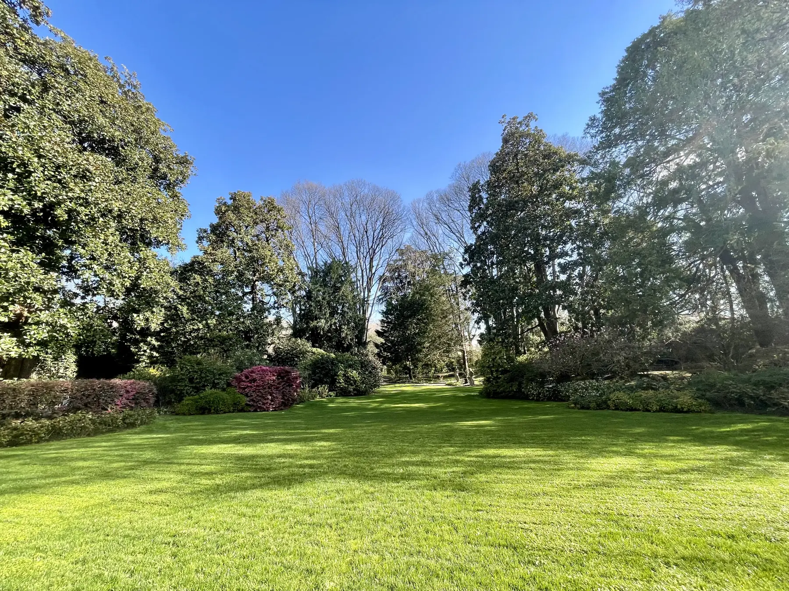
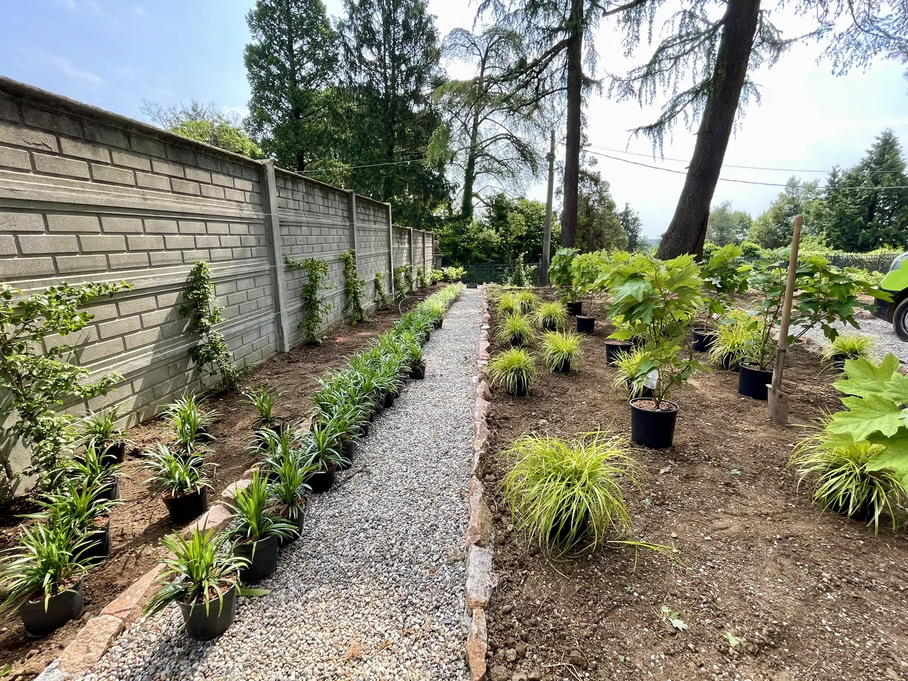
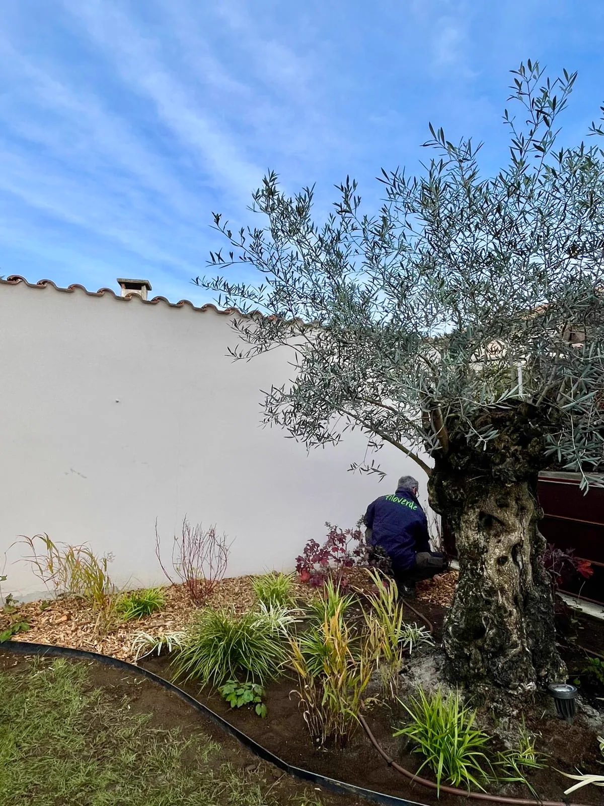

Abbattimento e potatura alberi con tecnica Tree Climbing
Il treeclimbing è una tecnica professionale di arrampicata sugli alberi utilizzata per la potatura, la manutenzione e la cura di esemplari di grandi dimensioni.
Gestiamo tutte le fasi del ciclo vitale delle piante e la manutenzione dell’area verde che le ospita.
Perché Filoverde
Lavoriamo con competenze tecniche riconosciute e nel rispetto degli standard più elevati.
Un unico interlocutore dal progetto dell’area verde alla sua cura negli anni.
Ogni intervento è organizzato con attenzione, per assicurare puntualità, efficienza e piena soddisfazione del cliente.
Lavoriamo con enti pubblici, aziende e privati, adattando ogni intervento alle esigenze del cliente.
Alberi ad alto fusto
Dalla messa a dimora alla fase adulta, fino all’abbattimento controllato quando non ci sono alternative.
Il treeclimbing è una tecnica professionale di arrampicata sugli alberi utilizzata per la potatura, la manutenzione e la cura di esemplari di grandi dimensioni.

L’abbattimento controllato permette di smontare l’albero in sezioni gestibili, riducendo al minimo il rischio di danni.

La fresatura dei ceppi è un intervento specialistico che permette di rimuovere in modo efficace e sicuro le ceppaie degli alberi abbattuti.

Una potatura ben eseguita ha l’obiettivo di preservare la forma naturale della pianta, salvaguardandone la salute e andando a ridurre al minimo gli interventi invasivi.
Giardini e piante
Manutenzione ordinaria e straordinaria di aree verdi pubbliche e private.

Il nostro servizio di costruzione giardini nasce con l’obiettivo di trasformare ogni spazio esterno in un progetto su misura, pensato per rispondere alle vostre esigenze estetiche, funzionali ed ecologiche.

Una manutenzione attenta e regolare è fondamentale per preservare nel tempo l’equilibrio, la bellezza e la funzionalità del progetto originario del giardino.

Un sistema di irrigazione ben progettato è essenziale per garantire la salute e la crescita equilibrata di qualsiasi spazio verde, ottimizzando l’uso dell’acqua e riducendo gli sprechi.

Per le piante meno vigorose offriamo interventi mirati di cura, trattamenti fitosanitari e concimazione, nel pieno rispetto dell’ambiente e della normativa vigente.
Committenti
Preventivo
Più dettagli ci dai (tipo di pianta, altezza indicativa, accessi disponibili, foto), più il preventivo sarà preciso.